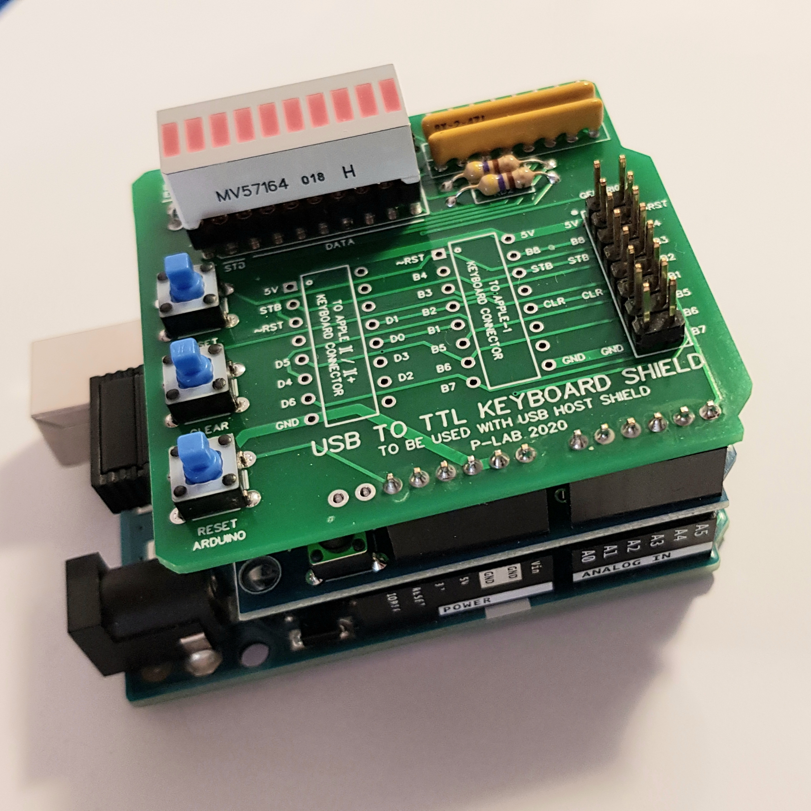

{ font-family: monospace }
USB to TTL keyboard shield

Documents hosted here:
PROJECT DESCRIPTION
Project Description in ITALIAN [pdf]
Project Description in ENGLISH [pdf]
File sender BASH script [text]
SCHEMATICS
Schematics [png]
PCB [Gerber/zip]
ATMEL 328P FIRMWARE (initial release:v1.1)
Firmware v1.1 NO ARDUINO BOOTLOADER [hex]
Firmware v1.1 WITH ARDUINO BOOTLOADER [hex]
External links:
Official Video [YouTube]
P-Lab 2020